Debrecen, 2026. április 10. (Diviánszky Ákos)
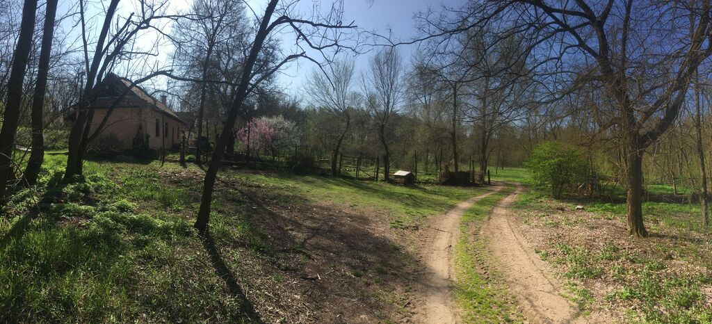
Ez a hirdetés azoknak szól akik saját részre keresnek ingatlant, közvetítők, kérem, ne keressenek. Köszönöm!
Régi erdészház újraépítésével épült 2007-ben, beton alapra, téglából, látszó gerendás födémmel, 2 rétegű fa nyílászárókkal, laminált padló és kerámia burkolatokkal. 2020-ban kapott 10 cm-es homlokzati hőszigetelést, 2025-ben külső-belső festést, a konyha új vízálló laminált, a terasz kerámia burkolatot.
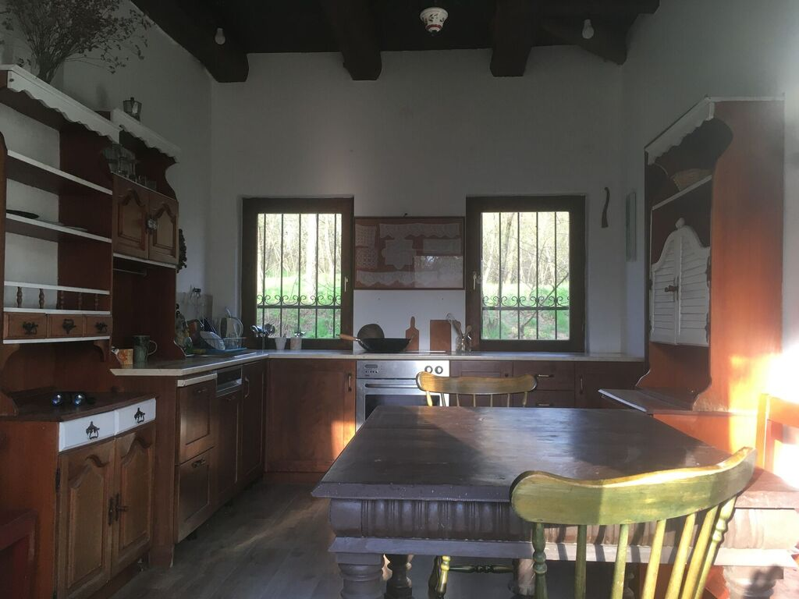
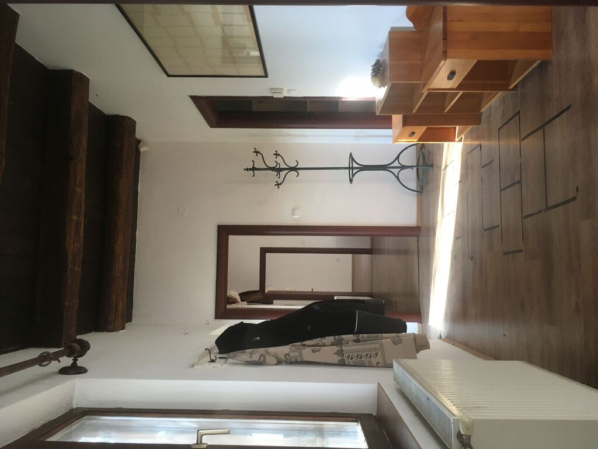
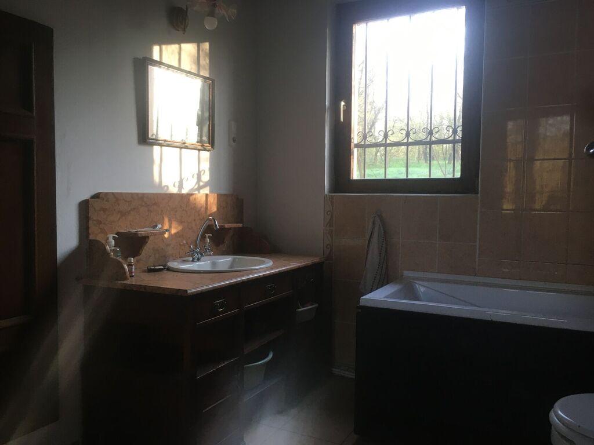
Hasznos alapterület 90,5 m², ebből a hőszigetelt rész (két szoba, közlekedő, gardrób, fürdőszoba, étkezős konyha) 75,8 m², a kamra és a kazánház 14,7 m². A garázs 44,6 m² alapterületű.
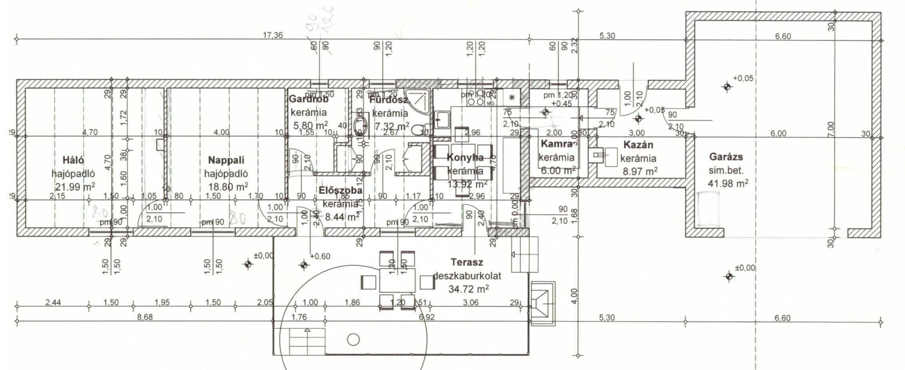
Fűtése radiátoros, vegyestüzelésú kazánnal, ami a villanybojler indirekt fűtését is ellátja.
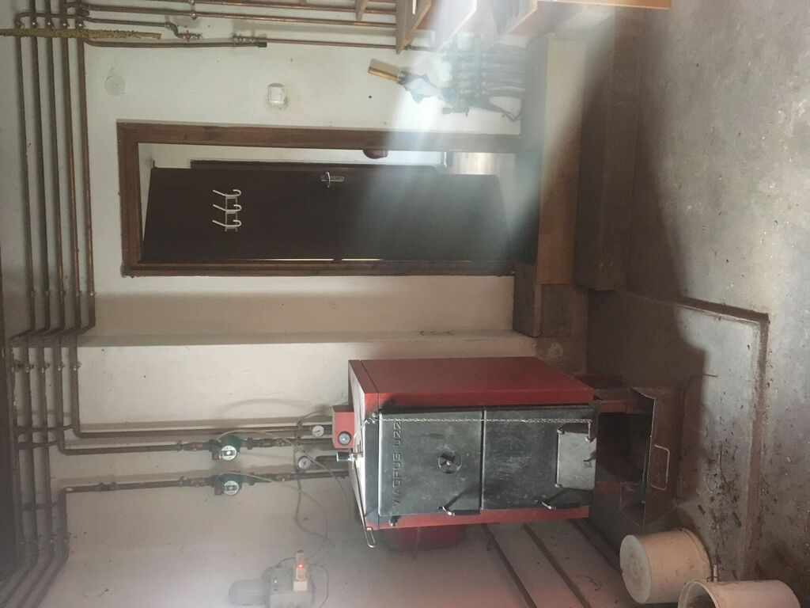
Ivóvízellátása saját fúrott kútról biztosított, a víz szűrés nélkül iható, a szennyvíz szikkasztóba kerül. Az épület tájolása nyugati. A délre néző garázstetőn van lehetőség napelem telepítésére.
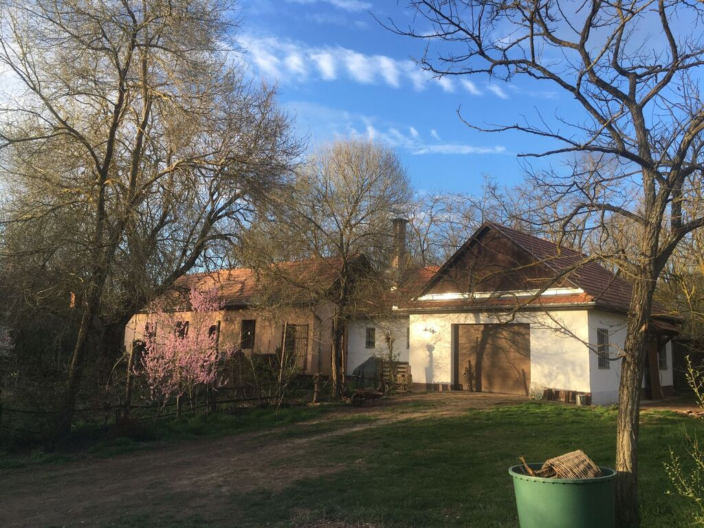
Az épület 1600 m²-es “kivett tanya” területen áll, ebből a ház előtt 600 m²-es bekerített kert található, ahol az elmúlt évtizedben vegyszermentes gazdálkodás és talajépítés folyt. A kertre nagy teraszról látunk rá, amit - a házzal együtt - egy százéves fa véd a nyári naptól.
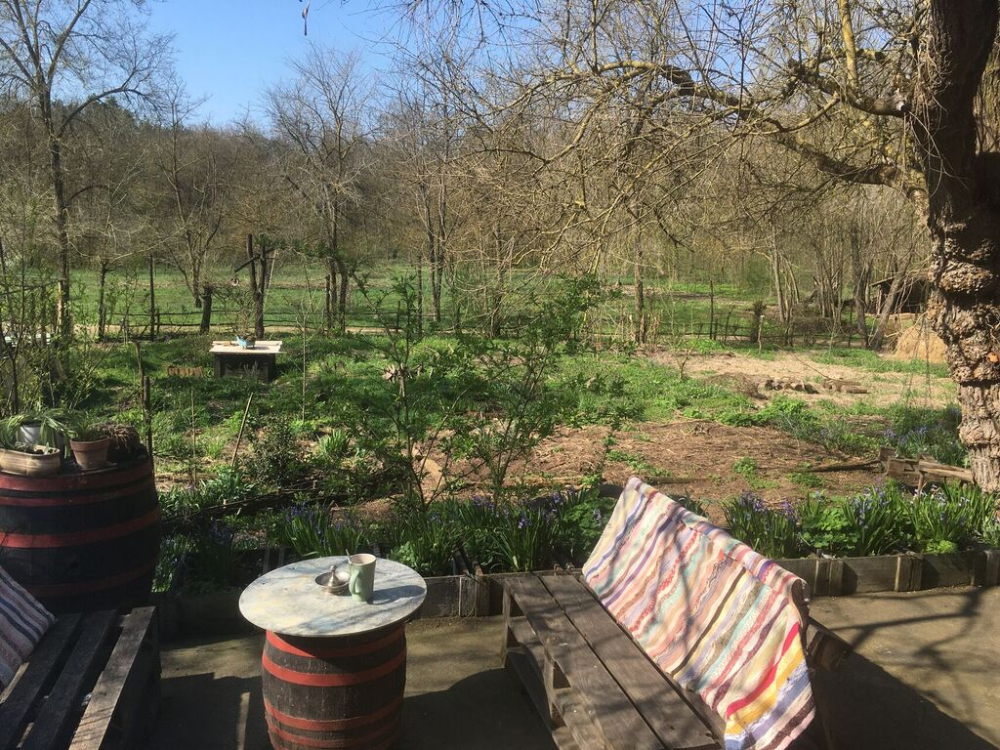
Az épület és a kert egy 3600 m²-es tisztáson helyezkedik el az erdő szívében. Az erdő határa a tisztástól 300-400 méterre esik bármelyik irányba indulunk. Az erdőn nincs átmenő forgalom sem átmenő út, a területnek egy bejárata van, máshol árokkal védett.
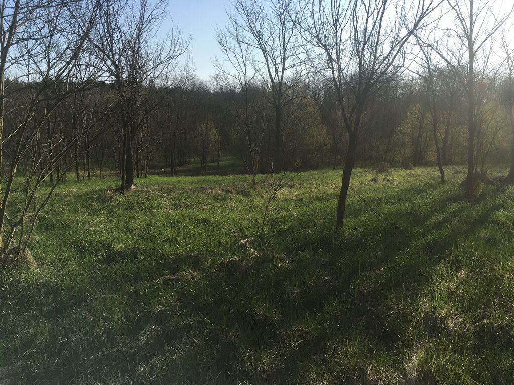
Különböző korú, fiatalos és többségében vágásérett erdei fenyő és akác részletekből áll az erdő. A terület nagyobbik fele dimbes-dombos, 3-6 méter magasra hullámzó domborzattal, ami elsőre a fák takarásában nem is tűnik fel.
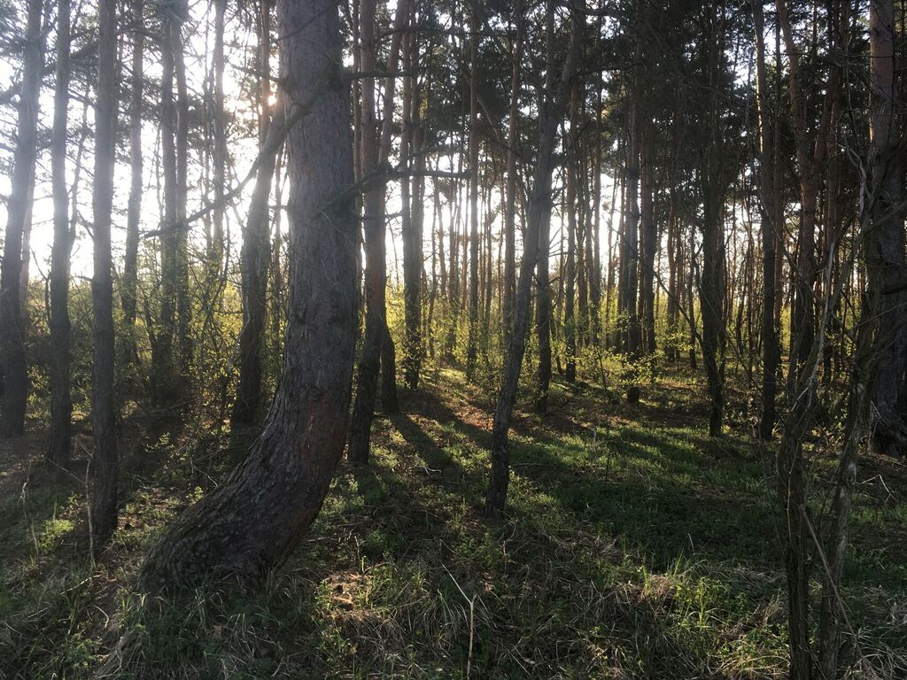
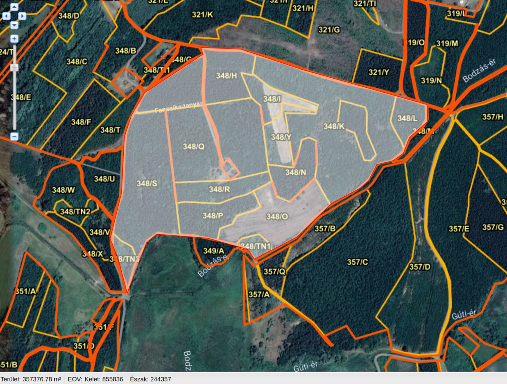
Dél felé indulva az erdőt a Bodzás víztározó határolja. A Bodzás az egyik legmagasabban fekvő tó, csak akkor töltik meg, ha a Fancsikai tavak már megteltek, ezért leggyakrabban egy nagy legelőnek látszik. Amikor mégis megtelik, vízi paradicsommá válik. A többi irányban más erdőket, az erdőspusztára jellemző tisztásokat, legelőket találunk.
Az erdő egyik sarkánál halad az Alföldi Kék Túra útvonala.
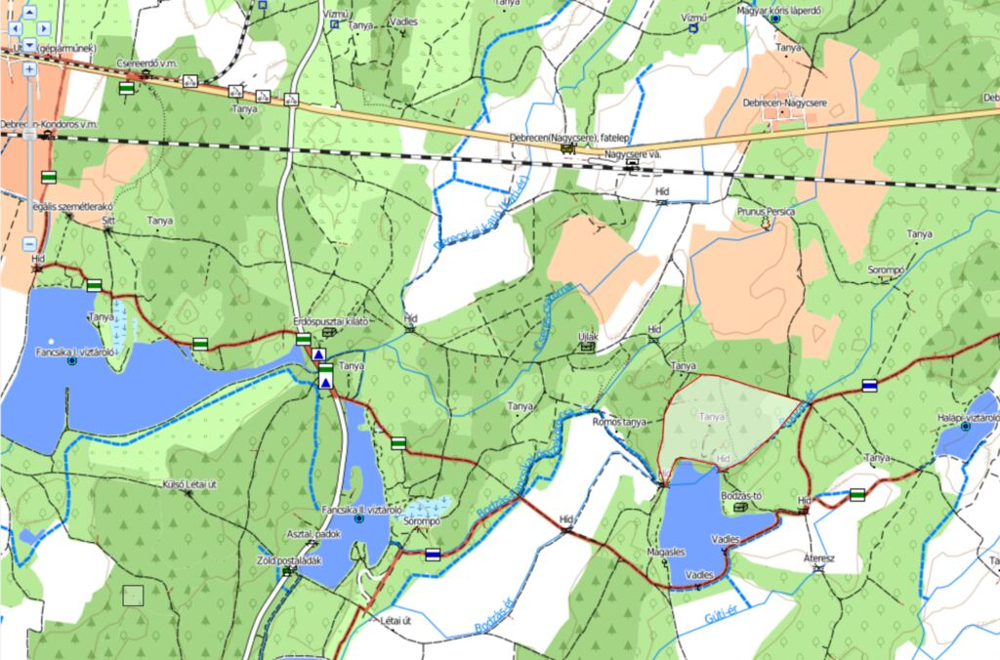
A környezet kifejezetten csendes, de korántsem lakatlan. Egy kilométeres sugarú körben 5 tanya található, a legközelebbi légvonalban 380m-re. A környéken barátságos emberek laknak, többen gazdálkodnak, a természettel összhangban igyekeznek élni, olyanok akikkel jó kapcsolódni.
Egy közmű után kell fizetni, ez az áram, 32A. A villanyvezetéket és póznákat néhány éve teljesen kicserélték, az áramellátás stabil.
Debrecentől keletre, a város erdőspusztás pihenőövezetében fekszik. Bár a pihenőövezet kialakításának nagyszabású tervei 1990 után nem folytatódtak, ebben az irányban gyárak azóta sem épültek; a környék csendes, tiszta, nyugodt.
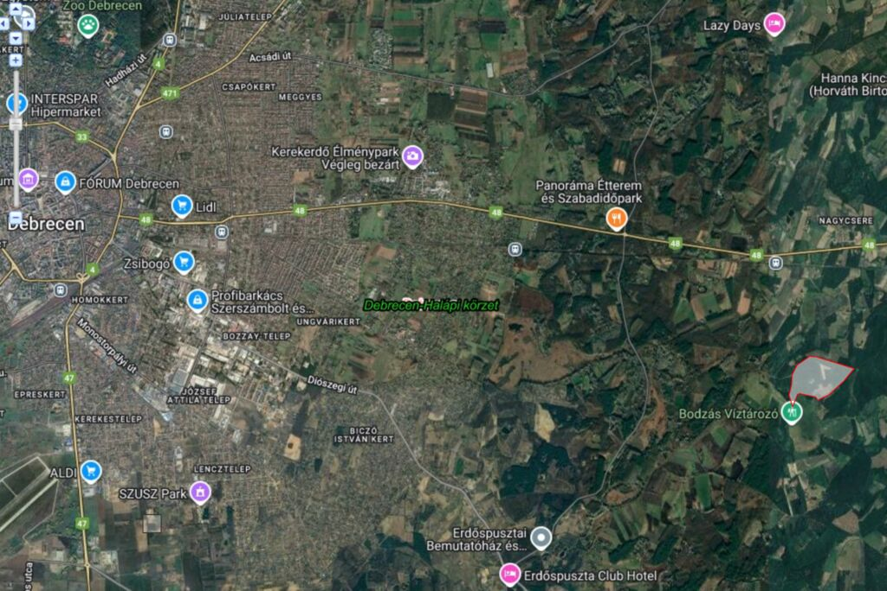
A tanya Debrecen és Vámospércs között épp félúton található.
A környék itt laza tanyás szerkezetű. Közeli kistelepülés Nagycsere (2,5 km), ahol 40 család él, és Haláp (5 km) ahol 400-500-an élnek.
Fontosabb távolságok közúton:
A busz és a vasúti megálló is 2,5 km földúton.
Google Maps link a 48-as úttól
Teljes útvonal képe autóval a Nagyállomástól:
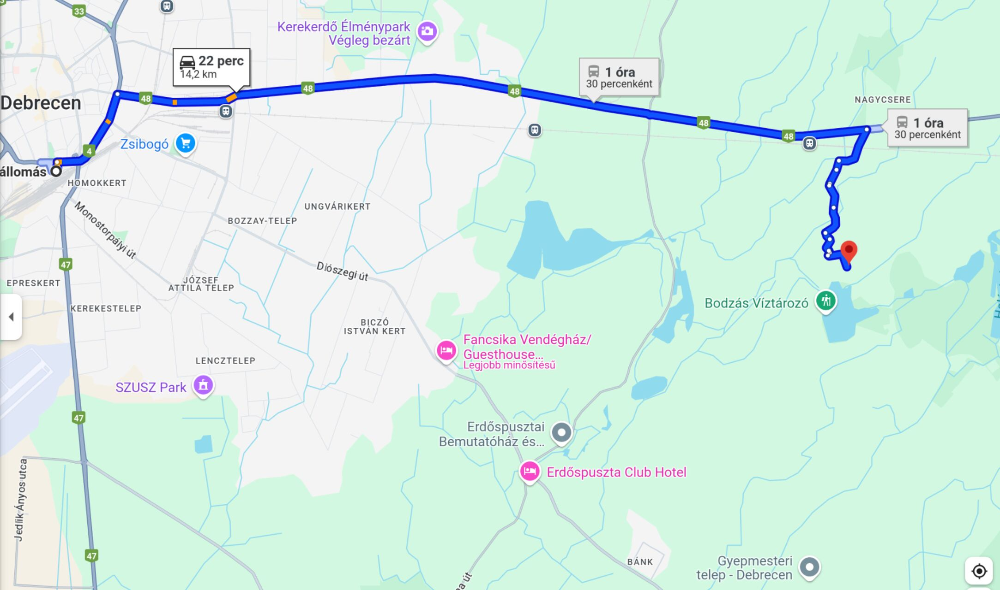
Az irányár (tanya és erdő egyben) 189 millió Forint.
Miért csak együtt eladó a tanya és az erdő?
Ritka, ezért talán van akinek értékes, hogy saját védősávja legyen az embernek a lakóhelye körül, hogy ő maga tartsa kézben mi történik azzal. Egyre fenntarthatatlanabb világunkban megnyugtató gondolat, hogy karnyújtásnyira van tüzifa, épületfa, hogy a tisztásokon jószág tud legelni.
Van a vásárlásnak valami különleges feltétele?
Ekkora erdőt csak magyar, Aranykalászos tanfolyamot elvégzett állampolgár vásárolhat.
Milyen a tulajdoni hányad?
Az ingatlan 1/1 tulajdonú, tehermentes, a tulajdonostól vásárolható meg.
Internet van?
A mobilnet már évek óta kielégítő. Akinek mégsem lenne nem elég, annak jó hír, hogy a Z-Net tanyavilágot ellátó szélessávú vezetéke az erdő szélénél fut, be lehet kötni.
Érdeklődöm!
Ez a hirdetés azoknak szól akik saját részre keresnek ingatlant, közvetítők kérem ne hívjanak. A +36 30 661 8846-as magánszámon lehet érdeklődni kedd és csütörtök 10-17 óra között.
Ha tetszik ez a hirdetés, de számodra nem aktuális, kérlek, oszd meg, hogy rátaláljon a gazdája. :) Köszönöm!